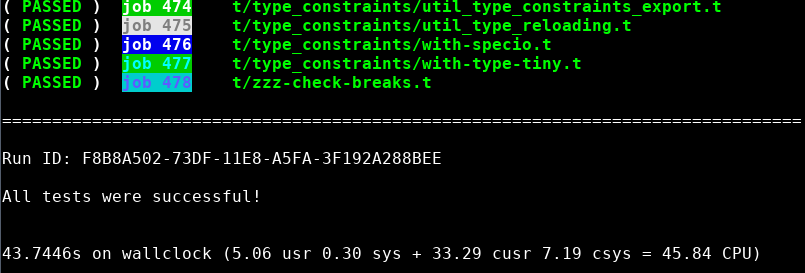

- No Preload
-
Moose without preload
The Moose test suite can take a while to run.
- Preload
-
Moose with preload
We can shave off an entire minute by preloading the Moose module! 
This is useful if you will be running tests 1 at a time, but want the benefit of preload. Now lets compare the 'run' command, which uses the persistent runner, and the 'test' command which does not.